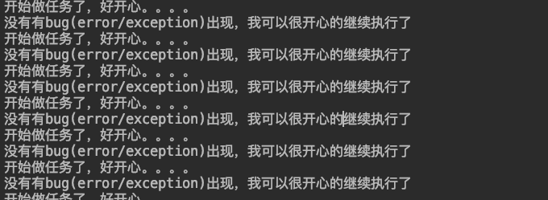
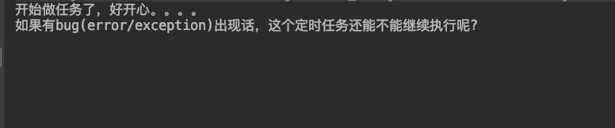
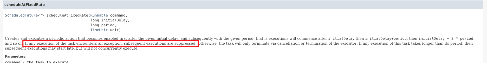

在做码农的日子里面，如果不跟线程打交道，那真的连入门都算不上了，如果你还仅仅是简单的new Thread，那么你就是跟我一样的小白了；怎么也得弄点高大上的线程池吧，
用线程池肯定就少不了java concurrent包中的ExecutorService了；这里面的学问还是挺大的。以后有机会慢慢品读；在你的任务中，肯定也有定时任务的吧，如果你的定时还用Timer的化，
那么你真的就跟我一样out了，具体原因请google下；说到Java的定时任务，肯定是非ScheduledExecutorService莫属了。这个用法是相当简单的。。。
正常运行
1 | package qhl.silver.ScheduledExecutorService; |
上述任务会每秒钟定时执行，输出如下所示：

遇到异常情况
但是，假如你的任务有问题呢？有bug，有异常呢？请看如下测试代码1
2
3
4
5
6
7
8
9
10
11
12
13
14
15
16
17
18
19
20
21
22
23package qhl.silver.ScheduledExecutorService;
import java.util.concurrent.Executors;
import java.util.concurrent.TimeUnit;
public class BadAssTask implements Runnable {
public void run() {
System.out.println("开始做任务了，好开心。。。。");
try {
Thread.sleep(100);
} catch (InterruptedException e) {
e.printStackTrace();
}
System.out.println("如果有bug(error/exception)出现话，这个定时任务还能不能继续执行呢? ");
throw new RuntimeException("卧槽。。出现bug了，你竟然不catch！！！！!");
}
public static void main(String[] args) {
Executors.newSingleThreadScheduledExecutor().scheduleAtFixedRate(new BadAssTask(), 1, 1, TimeUnit.SECONDS);
}
}
以上测试代码就会出现如下输出，也就是仅仅运行了一次就挂了。这不符合预期啊！

问题原因查找
打开jdk的官方文档!, 可以看到如下解释

以上标注内容翻译为人话就是：如果执行过程中遇到了问题（error/exception）,那么后面的定时任务也就不会继续执行了
这显然不符合预期啊。这简直就是fuck egg的事情，哪有程序不会遇到点bug，遇到点异常呢？当时执行遇到异常，也许以后就好了呢？毕竟编程是一门神学，你不能因为一次异常，而放弃执行之后的定时任务啊！！！！
解决办法
那怎么解决这个问题呢。很显然，既然ScheduledExecutorService有可能在运行任务的过程中。任务（继承Runnable接口的）有可能抛出异常，那就catch这个异常呗。
方法1
在run方法的外部，使用try catch语句catch可能的异常，仅仅catch 异常（Exception）还是不够的，有可能还有error，所以都需要catch的，代码如下1
2
3
4
5
6
7try {
throw new RuntimeException("卧槽。。出现bug了，你竟然不catch！！！！!");
} catch (Error e) {
System.out.println("error occurred, e=" + e);
} catch (Exception e) {
System.out.println("exception occurred, e=" + e);
}
当然了，由于Error和Exception都继承了Throwable，所以，只需要catch Throwable一个就可以了，所以以上代码可以简化为如下形式：1
2
3
4
5try {
throw new RuntimeException("卧槽。。出现bug了，你竟然不catch！！！！!");
} catch (Throwable t) {
System.out.println("some thing wrong happened, error=" + t);
}
但是在每个run方法中都要try catch，也是很痛苦的事情，这得多了多少代码啊！！！此时，方法2就要现身了！！！
方法2
编写一个wrap类，封装这个ScheduledThreadPoolExecutor，在这个类里面进行try/catch。这样外部就不用try/catch了；当然你也可以在这个类里面把异常继续向上抛出，如果选择继续把异常向上抛出，那么外部必须选择try/catch此异常，否则，还是会造成后续定时任务不会执行
1 | package qhl.silver.ScheduledExecutorService; |
问题延伸-看看知名开源软件怎么玩的
google guava 中的WrappingExecutorService，WrappingScheduledExecutorService也是简单的封装了，而且是abstract类，用户还无法直接使用，必须要有一个实现类implement这个类方可使用。思想与上述解决方案2一致。
画外音
线程池中的ExecutorService也是有这个问题的。请看如下代码,就如同注释中说的，如果不try catch，则如果遇到问题就不会继续执行了。1
2
3
4
5
6
7
8
9
10
11
12
13
14
15
16
17
18
19
20
21
22
23
24
25
26
27
28
29
30
31package qhl.silver.ScheduledExecutorService;
import java.util.concurrent.ExecutorService;
import java.util.concurrent.Executors;
public class TestExecutor {
private ExecutorService executeProcessor;
TestExecutor() {
executeProcessor = Executors.newSingleThreadScheduledExecutor();
executeProcessor.execute(this::taskRun);
}
public void taskRun() {
while (true) {
System.out.println("正常执行");
try {
Thread.sleep(1 * 1000);
throw new RuntimeException("出错了，但是被我catch住之后，还是会继续执行的!!!");
} catch (Throwable e) {
System.out.println("error occurred = " + e);
}
System.out.println("由于下面的错误没有被catch，所以这个任务就不会被继续执行了");
// throw new RuntimeException("出错了，没有被catch，所以就不会继续执行了!!!");
}
}
public static void main(String args[]) {
new TestExecutor();
}
}
结论
凡事使用ExecutorService的，都要try catch
参考文献
ScheduledExecutorService Exception handling
Mother F**k the ScheduledExecutorService!